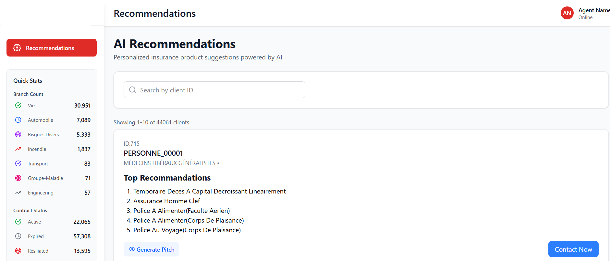

Project 9: Hybrid Recommendation System for Insurance Product Optimization
A sophisticated hybrid recommendation system that combines rule-based matching with XGBoost machine learning to optimize insurance product recommendations for clients. The system analyzes client demographics, contract history, claims data, and behavioral patterns to provide personalized product suggestions that maximize both client satisfaction and business value.
Objectives
- Develop a hybrid recommendation system combining rule-based and ML approaches
- Analyze client profiles and insurance behavior patterns
- Implement XGBoost for predictive modeling
- Create personalized product recommendations
- Optimize insurance product cross-selling and upselling
Tools Used
- Python
- Pandas & NumPy
- XGBoost
- Scikit-learn
- Plotly
- Optuna (Hyperparameter Optimization)
- Jupyter Notebook
Key Features
- Data Integration: Merged client demographics, contract data, claims history, and product mappings
- Client Profiling: Created comprehensive client profiles with behavioral features
- Rule-Based Matching: Implemented demographic and profile-based product matching
- Machine Learning Layer: XGBoost model with GPU acceleration for prediction
- Hybrid Scoring: Combined ML predictions with rule-based flags for final recommendations
- Hyperparameter Optimization: Used Optuna for model tuning
Results



Technical Implementation
Data Processing Pipeline
- Cleaned and standardized 44,061 client records
- Processed 92,981 insurance contracts
- Analyzed 11,150 claims records
- Created client-product pairs for recommendation modeling
Feature Engineering
- Client demographics (age, gender, profession, sector)
- Contract behavior (count, status, premiums paid)
- Claims history and frequency
- Profile matching scores
- Geographic and temporal features
Model Performance
- Achieved ROC-AUC of 0.8367 on test data
- Optimized hyperparameters using Optuna
- GPU-accelerated training with XGBoost
- Hybrid scoring combining ML predictions with business rules
Business Impact
- Personalized product recommendations for 44,000+ clients
- Improved cross-selling and upselling opportunities
- Data-driven approach to insurance product optimization
- Scalable recommendation system for large client bases